def showAll():
keyDown(Key.ALT); type("h"); keyUp(Key.ALT); type("a" + Key.ESC); type(" ");
def confirmInput():
type(Key.ENTER); type(Key.ESC)
import configurator, os
p = configurator.start_it_up(getBundlePath(), "all_objects.blend", delete_pix=False)
try:
wait( , 5); hover(); type(Key.ESC); type(" ");
# PREFAB LOCATORS
type("Switch Visibility of Prefab Navigation Locators"); confirmInput(); find(Pattern(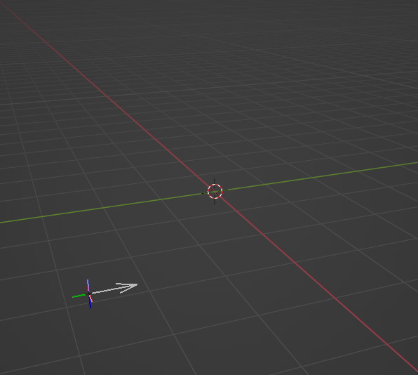).similar(0.96)); showAll()
type("Switch Visibility of Prefab Spawn Locators"); confirmInput(); find(Pattern(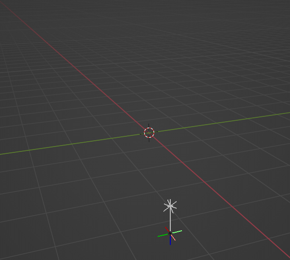).similar(0.96)); showAll()
type("Switch Visibility of Prefab Trigger Locators"); confirmInput(); find(Pattern(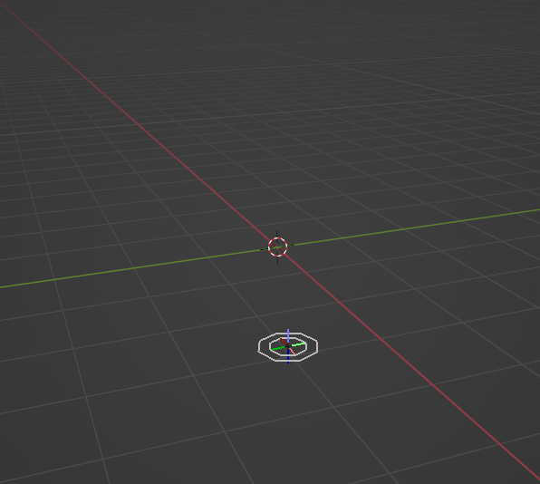).similar(0.96)); showAll()
type("Switch Visibility of Prefab Map Locators"); confirmInput(); find(Pattern(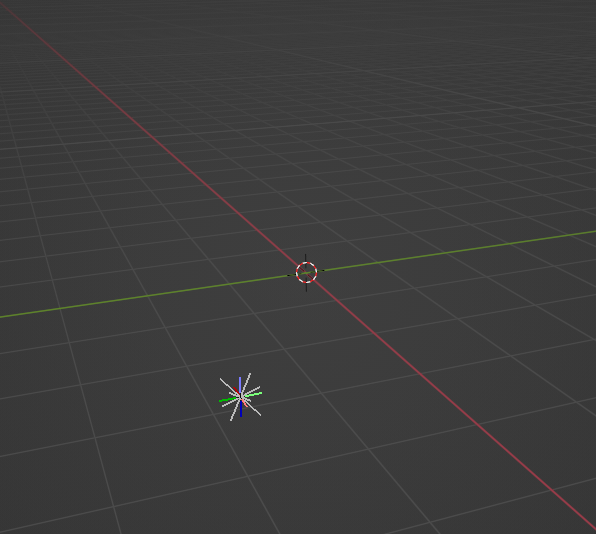).similar(0.96)); showAll()
type("Switch Visibility of Prefab Control Node Locators"); confirmInput(); find(Pattern(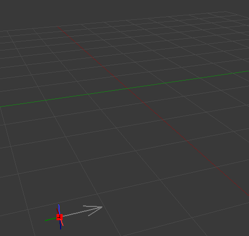).similar(0.96)); showAll()
type("Switch Visibility of Prefab Traffic Locators"); confirmInput(); find(Pattern(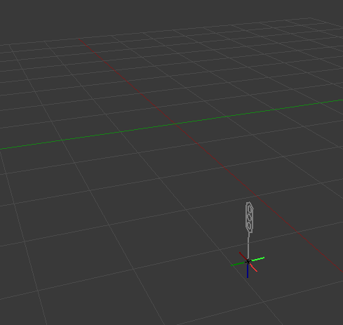).similar(0.96)); showAll()
type("Switch Visibility of Prefab Sign Locators"); confirmInput(); find(Pattern(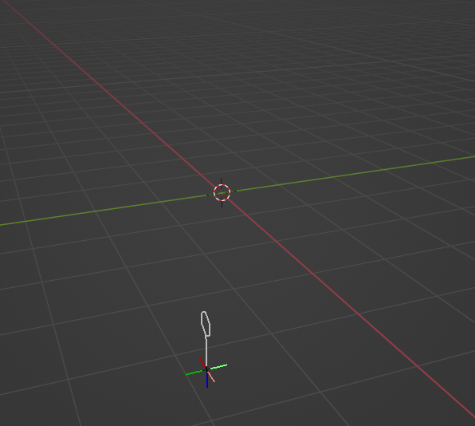).similar(0.96)); showAll()
type("Switch Visibility of Prefab Locators"); confirmInput(); find(Pattern(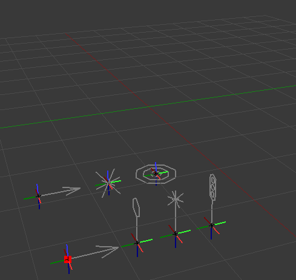).similar(0.96)); showAll()
# COLLISION LOCATORS
type("Switch Visibility of Collision Locators"); confirmInput(); find(Pattern(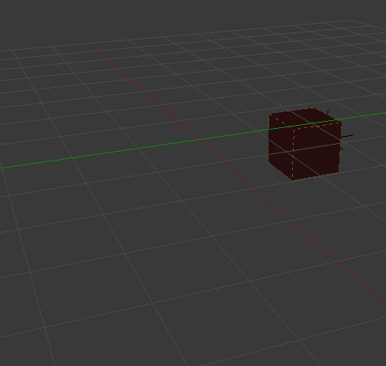).similar(0.96)); showAll()
# MODEL LOCATORS
type("Switch Visibility of Model Locators"); confirmInput(); find(Pattern(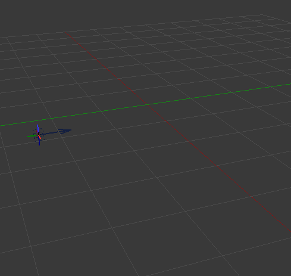).similar(0.96)); showAll()
# ALL LOCATORS
type("Switch Visibility of All Locators"); confirmInput(); find(Pattern(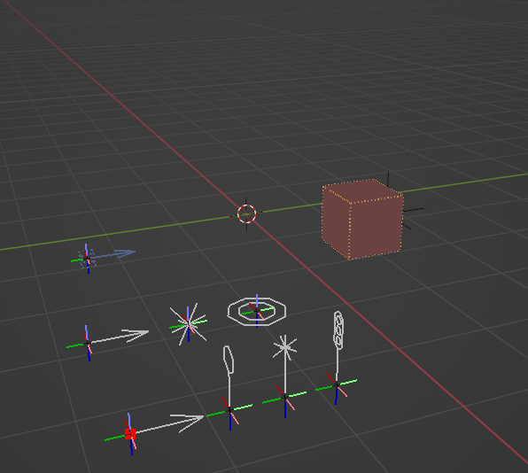).similar(0.96));
except:
configurator.save_screenshot(getBundlePath(), Screen())
raise
finally:
configurator.close_blender(p)
, 5); hover(); type(Key.ESC); type(" ");
# PREFAB LOCATORS
type("Switch Visibility of Prefab Navigation Locators"); confirmInput(); find(Pattern(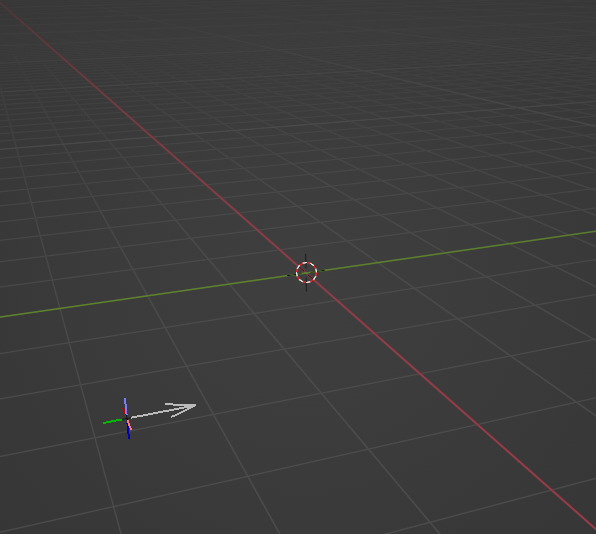).similar(0.96)); showAll()
type("Switch Visibility of Prefab Spawn Locators"); confirmInput(); find(Pattern(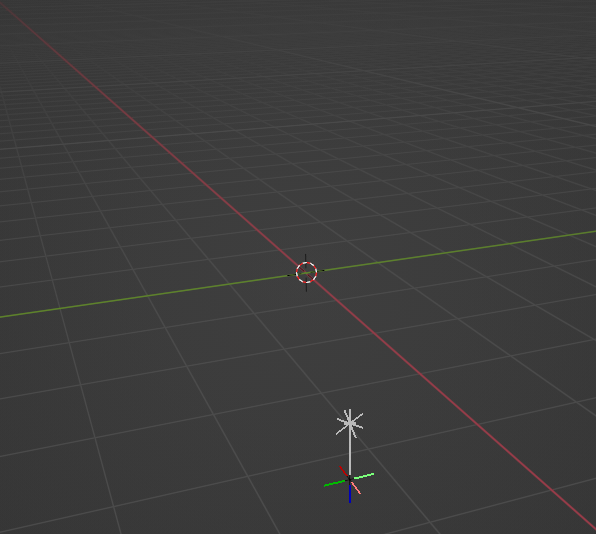).similar(0.96)); showAll()
type("Switch Visibility of Prefab Trigger Locators"); confirmInput(); find(Pattern(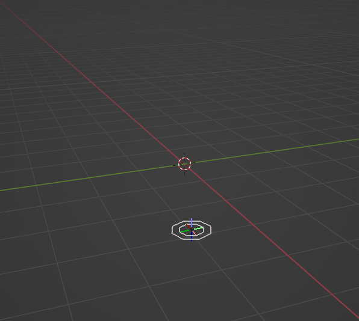).similar(0.96)); showAll()
type("Switch Visibility of Prefab Map Locators"); confirmInput(); find(Pattern(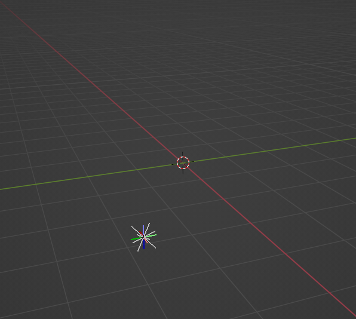).similar(0.96)); showAll()
type("Switch Visibility of Prefab Control Node Locators"); confirmInput(); find(Pattern(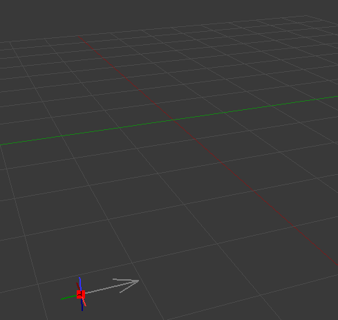).similar(0.96)); showAll()
type("Switch Visibility of Prefab Traffic Locators"); confirmInput(); find(Pattern(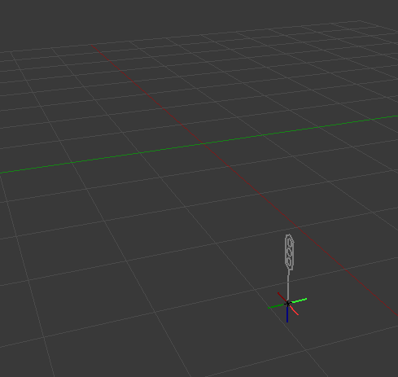).similar(0.96)); showAll()
type("Switch Visibility of Prefab Sign Locators"); confirmInput(); find(Pattern(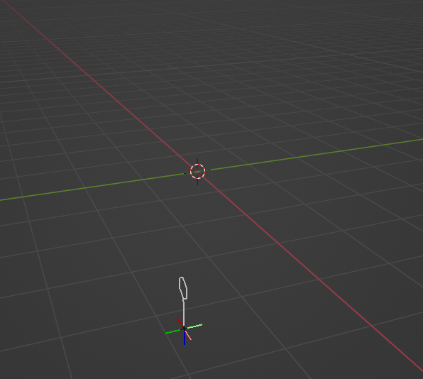).similar(0.96)); showAll()
type("Switch Visibility of Prefab Locators"); confirmInput(); find(Pattern(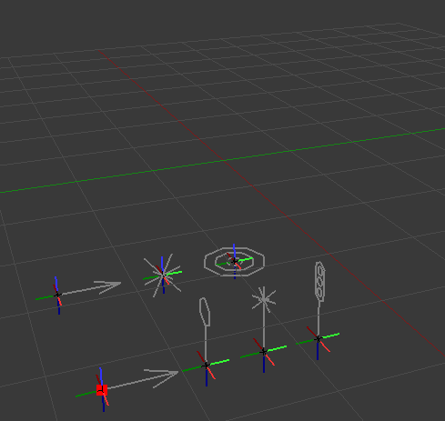).similar(0.96)); showAll()
# COLLISION LOCATORS
type("Switch Visibility of Collision Locators"); confirmInput(); find(Pattern(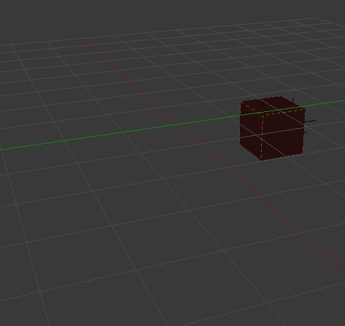).similar(0.96)); showAll()
# MODEL LOCATORS
type("Switch Visibility of Model Locators"); confirmInput(); find(Pattern(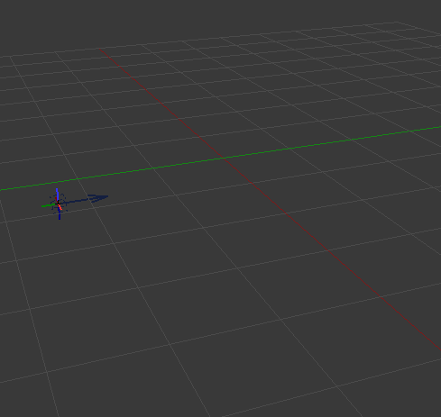).similar(0.96)); showAll()
# ALL LOCATORS
type("Switch Visibility of All Locators"); confirmInput(); find(Pattern(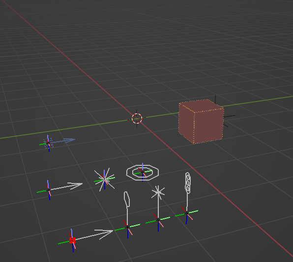).similar(0.96));
except:
configurator.save_screenshot(getBundlePath(), Screen())
raise
finally:
configurator.close_blender(p)